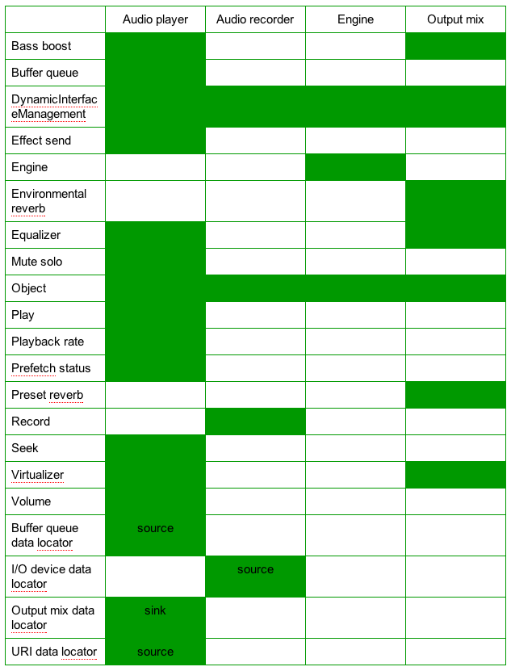
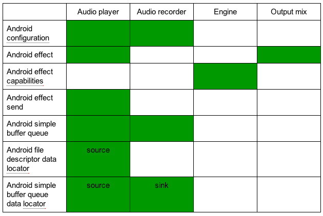

Unless otherwise noted, all features are available at Android API level 9 (Android platform version 2.3) and higher. Some features are only available at Android API level 14 (Android platform version 4.0) and higher; these are noted.
OpenSL ES provides a C language interface that is also callable from C++, and exposes features similar to the audio portions of these Android APIs callable from Java programming language code:
As with all of the Android Native Development Kit (NDK), the primary purpose of OpenSL ES for Android is to facilitate the implementation of shared libraries to be called from Java programming language code via Java Native Interface (JNI). NDK is not intended for writing pure C/C++ applications. That said, OpenSL ES is a full-featured API, and we expect that you should be able to accomplish most of your audio needs using only this API, without up-calls to code running in the Dalvik VM.Note: though based on OpenSL ES, the Android native audio API is not a conforming implementation of any OpenSL ES 1.0.1 profile (game, music, or phone). This is because Android does not implement all of the features required by any one of the profiles. Any known cases where Android behaves differently than the specification are described in section "Android extensions" below.
platforms/android-9/samples/native-audio/.
At a minimum, add the following line to your code:
#include <SLES/OpenSLES.h>If you use Android extensions, also include this header:
#include <SLES/OpenSLES_Android.h>which automatically includes these headers as well (you don't need to include these, they are shown as an aid in learning the API):
#include <SLES/OpenSLES_AndroidConfiguration.h> #include <SLES/OpenSLES_AndroidMetadata.h>
LOCAL_LDLIBS += libOpenSLES
res/raw/ folder,
they can be accessed easily by the associated APIs for
Resources. However there is no direct native access to resources,
so you will need to write Java programming language code to copy them out before use.
assets/ folder,
they will be directly accessible by the Android native asset manager
APIs. See the header files android/asset_manager.h
and android/asset_manager_jni.h for more information
on these APIs. The example code
located in NDK folder
platforms/android-9/samples/native-audio/ uses these
native asset manager APIs in conjunction with the Android file
descriptor data locator.
file: scheme for local files,
provided the files are accessible by the application.
Note that the Android security framework restricts file access via
the Linux user ID and group ID mechanism.
bin2c tool (not supplied).
Note that it is your responsibility to ensure that you are legally permitted to play or record content, and that there may be privacy considerations for recording content.
SLresult
value which is returned by most APIs. Use of assert
vs. more advanced error handling logic is a matter of coding style
and the particular API; see the Wikipedia article on
assert
for more information. In the supplied example, we have used assert
for "impossible" conditions which would indicate a coding error, and
explicit error handling for others which are more likely to occur
in production.
Many API errors result in a log entry, in addition to the non-zero
result code. These log entries provide additional detail which can
be especially useful for the more complex APIs such as
Engine::CreateAudioPlayer.
Use adb logcat, the Eclipse ADT plugin LogCat pane, or ddms logcat to see the log.
slCreateEngine
slQueryNumSupportedEngineInterfaces
slQuerySupportedEngineInterfaces

Engine::CreateAudioRecorder.
It should be initialized using these values, as shown in the example:
SLDataLocator_IODevice loc_dev =
{SL_DATALOCATOR_IODEVICE, SL_IODEVICE_AUDIOINPUT,
SL_DEFAULTDEVICEID_AUDIOINPUT, NULL};
RemoveInterface and ResumeInterface are not supported.
The platform may ignore effect requests if it estimates that the CPU load would be too high.
SetSendLevel supports a single send level per audio player.
reflectionsDelay,
reflectionsLevel, or reverbDelay fields of
struct SLEnvironmentalReverbSettings.
The Android implementation of OpenSL ES requires that mimeType
be initialized to either NULL or a valid UTF-8 string,
and that containerType be initialized to a valid value.
In the absence of other considerations, such as portability to other
implementations, or content format which cannot be identified by header,
we recommend that you
set the mimeType to NULL and containerType
to SL_CONTAINERTYPE_UNSPECIFIED.
Supported formats include WAV PCM, WAV alaw, WAV ulaw, MP3, Ogg Vorbis, AAC LC, HE-AACv1 (aacPlus), HE-AACv2 (enhanced aacPlus), AMR, and FLAC [provided these are supported by the overall platform, and AAC formats must be located within an MP4 or ADTS container]. MIDI is not supported. WMA is not part of the open source release, and compatibility with Android OpenSL ES has not been verified.
The Android implementation of OpenSL ES does not support direct playback of DRM or encrypted content; if you want to play this, you will need to convert to cleartext in your application before playing, and enforce any DRM restrictions in your application.
Resume, RegisterCallback,
AbortAsyncOperation, SetPriority,
GetPriority, and SetLossOfControlInterfaces
are not supported.
Note that the field samplesPerSec is actually in
units of milliHz, despite the misleading name. To avoid accidentally
using the wrong value, you should initialize this field using one
of the symbolic constants defined for this purpose (such as
SL_SAMPLINGRATE_44_1 etc.)
PlaybackRate::GetRateRange
or PlaybackRate::GetCapabilitiesOfRate.
That said, some guidance on typical rate ranges may be useful:
In Android 2.3 a single playback rate range from 500 per mille to 2000 per mille
inclusive is typically supported, with property
SL_RATEPROP_NOPITCHCORAUDIO.
In Android 4.0 the same rate range is typically supported for a data source
in PCM format, and a unity rate range for other formats.
SL_RECORDEVENT_HEADATLIMIT and
SL_RECORDEVENT_HEADMOVING events are not supported.
SetLoop enables whole file looping. The startPos
parameter should be zero and the endPos parameter should
be SL_TIME_UNKNOWN.
http: and file:.
A missing scheme defaults to the file: scheme. Other
schemes such as https:, ftp:, and
content: are not supported.
rtsp: is not verified.
OpenSL ES for Android supports a single engine per application, and up to 32 objects. Available device memory and CPU may further restrict the usable number of objects.
slCreateEngine recognizes, but ignores, these engine options:
SL_ENGINEOPTION_THREADSAFE
SL_ENGINEOPTION_LOSSOFCONTROL
The Android team is committed to preserving future API binary compatibility for developers to the extent feasible. It is our intention to continue to support future binary compatibility of the 1.0.1-based API, even as we add support for later versions of the standard. An application developed with this version should work on future versions of the Android platform, provided that you follow the guidelines listed in section "Planning for binary compatibility" below.
Note that future source compatibility will not be a goal. That is, if you upgrade to a newer version of the NDK, you may need to modify your application source code to conform to the new API. We expect that most such changes will be minor; see details below.
BufferQueue::Enqueue, the parameter
list for slBufferQueueCallback,
and the name of field SLBufferQueueState.playIndex.
We recommend that your application code use Android simple buffer
queues instead, because we do not plan to change that API.
In the example code supplied with the NDK, we have used
Android simple buffer queues for playback for this reason.
(We also use Android simple buffer queue for recording and decode to PCM, but
that is because standard OpenSL ES 1.0.1 does not support record or decode to
a buffer queue data sink.)
const to input parameters passed by reference,
and to SLchar * struct fields used as input values.
This should not require any changes to your code.
SLint32 to SLuint32 or similar, or add a cast.
Equalizer::GetPresetName will copy the string to
application memory instead of returning a pointer to implementation
memory. This will be a significant change, so we recommend that you
either avoid calling this method, or isolate your use of it.
SLchar will change from unsigned char
to char. This primarily affects the URI data locator
and MIME data format.
SLDataFormat_MIME.mimeType will be renamed to pMimeType,
and SLDataLocator_URI.URI will be renamed to pURI.
We recommend that you initialize the SLDataFormat_MIME
and SLDataLocator_URI
data structures using a brace-enclosed comma-separated list of values,
rather than by field name, to isolate your code from this change.
In the example code we have used this technique.
SL_DATAFORMAT_PCM does not permit the application
to specify the representation of the data as signed integer, unsigned
integer, or floating-point. The Android implementation assumes that
8-bit data is unsigned integer and 16-bit is signed integer. In
addition, the field samplesPerSec is a misnomer, as
the actual units are milliHz. These issues are expected to be
addressed in the next OpenSL ES version, which will introduce a new
extended PCM data format that permits the application to explicitly
specify the representation, and corrects the field name. As this
will be a new data format, and the current PCM data format will
still be available (though deprecated), it should not require any
immediate changes to your code.
SLES/OpenSLES_Android.h
and the header files that it includes.
Consult that file for details on these extensions. Unless otherwise
noted, all interfaces are "explicit".
Note that use these extensions will limit your application's
portability to other OpenSL ES implementations. If this is a concern,
we advise that you avoid using them, or isolate your use of these
with #ifdef etc.
The following figure shows which Android-specific interfaces and data locators are available for each object type.

SLES/OpenSLES_AndroidConfiguration.h
documents the available configuration keys and values:
SL_ANDROID_STREAM_MEDIA)
SL_ANDROID_RECORDING_PRESET_GENERIC)
// CreateAudioPlayer and specify SL_IID_ANDROIDCONFIGURATION
// in the required interface ID array. Do not realize player yet.
// ...
SLAndroidConfigurationItf playerConfig;
result = (*playerObject)->GetInterface(playerObject,
SL_IID_ANDROIDCONFIGURATION, &playerConfig);
assert(SL_RESULT_SUCCESS == result);
SLint32 streamType = SL_ANDROID_STREAM_ALARM;
result = (*playerConfig)->SetConfiguration(playerConfig,
SL_ANDROID_KEY_STREAM_TYPE, &streamType, sizeof(SLint32));
assert(SL_RESULT_SUCCESS == result);
// ...
// Now realize the player here.
Similar code can be used to configure the preset for an audio recorder.
Portable applications should use the OpenSL ES 1.0.1 APIs for audio effects instead of the Android effect extensions.
This is especially useful in conjunction with the native asset manager.
For recording, the application should enqueue empty buffers. Upon notification of completion via a registered callback, the filled buffer is available for the application to read.
For playback there is no difference. But for future source code compatibility, we suggest that applications use Android simple buffer queues instead of OpenSL ES 1.0.1 buffer queues.
DynamicInterfaceManagement::AddInterface.
SL_PLAYSTATE_STOPPED state the play cursor is
returned to the beginning of the currently playing buffer." The
Android implementation does not necessarily conform to this
requirement. For Android, it is unspecified whether a transition
to SL_PLAYSTATE_STOPPED operates as described, or
leaves the play cursor unchanged.
We recommend that you do not rely on either behavior; after a
transition to SL_PLAYSTATE_STOPPED, you should explicitly
call BufferQueue::Clear. This will place the buffer
queue into a known state.
A corollary is that it is unspecified whether buffer queue callbacks
are called upon transition to SL_PLAYSTATE_STOPPED or by
BufferQueue::Clear.
We recommend that you do not rely on either behavior; be prepared
to receive a callback in these cases, but also do not depend on
receiving one.
It is expected that a future version of OpenSL ES will clarify these issues. However, upgrading to that version would result in source code incompatibilities (see section "Planning for source compatibility" above).
Engine::QueryNumSupportedExtensions,
Engine::QuerySupportedExtension,
Engine::IsExtensionSupported report these extensions:
ANDROID_SDK_LEVEL_#
where # is the platform API level, 9 or higher
A standard audio player plays back to an audio device, and the data sink is specified as an output mix. However, as an Android extension, an audio player instead acts as a decoder if the data source is specified as a URI or Android file descriptor data locator with MIME data format, and the data sink is an Android simple buffer queue data locator with PCM data format.
This feature is primarily intended for games to pre-load their
audio assets when changing to a new game level, similar to
android.media.SoundPool.
The application should initially enqueue a set of empty buffers to the Android simple buffer queue, which will be filled with PCM data. The Android simple buffer queue callback is invoked after each buffer is filled. The callback handler should process the PCM data, re-enqueue the now-empty buffer, and then return. The application is responsible for keeping track of decoded buffers; the callback parameter list does not include sufficient information to indicate which buffer was filled or which buffer to enqueue next.
The end of stream is determined implicitly by the data source.
At the end of stream a SL_PLAYEVENT_HEADATEND event is
delivered. The Android simple buffer queue callback will no longer
be called after all consumed data is decoded.
The sink's PCM data format typically matches that of the encoded data source with respect to sample rate, channel count, and bit depth. However, the platform implementation is permitted to decode to a different sample rate, channel count, or bit depth. There is a provision to detect the actual PCM format; see section "Determining the format of decoded PCM data via metadata" below.
Decode to PCM supports pause and initial seek. Volume control, effects, looping, and playback rate are not supported.
Depending on the platform implementation, decoding may require resources that cannot be left idle. Therefore it is not recommended to starve the decoder by failing to provide a sufficient number of empty PCM buffers, e.g. by returning from the Android simple buffer queue callback without enqueueing another empty buffer. The result of decoder starvation is unspecified; the implementation may choose to either drop the decoded PCM data, pause the decoding process, or in severe cases terminate the decoder.
An audio player acts as a streaming decoder if the data source is an Android buffer queue data locator with MIME data format, and the data sink is an Android simple buffer queue data locator with PCM data format. The MIME data format should be configured as:
SL_CONTAINERTYPE_RAW
"audio/vnd.android.aac-adts" (macro SL_ANDROID_MIME_AACADTS)
This feature is primarily intended for streaming media applications that deal with AAC audio, but need to apply custom processing of the audio prior to playback. Most applications that need to decode audio to PCM should use the method of the previous section "Decode audio to PCM", as it is simpler and handles more audio formats. The technique described here is a more specialized approach, to be used only if both of these conditions apply:
It is not recommended to starve the decoder by failing to provide full ADTS AAC buffers, e.g. by returning from the Android buffer queue callback without enqueueing another full buffer. The result of decoder starvation is unspecified.
In all respects except for the data source, the streaming decode method is similar to that of the previous section:
SL_PLAYEVENT_HEADATEND event is delivered at end of stream
Despite the similarity in names, an Android buffer queue is not the same as an Android simple buffer queue. The streaming decoder uses both kinds of buffer queues: an Android buffer queue for the ADTS AAC data source, and an Android simple buffer queue for the PCM data sink. The Android simple buffer queue API is described in this document in section "Android simple buffer queue data locator and interface". The Android buffer queue API is described in the Android native media API documentation, located in docs/openmaxal/index.html.
SLMetadataExtractionItf
is a standard OpenSL ES 1.0.1 interface, not an Android extension.
However, the particular metadata keys that
indicate the actual format of decoded PCM data are specific to Android,
and are defined in header SLES/OpenSLES_AndroidMetadata.h.
The metadata key indices are available immediately after
Object::Realize. Yet the associated values are not
available until after the first encoded data has been decoded. A good
practice is to query for the key indices in the main thread after Realize,
and to read the PCM format metadata values in the Android simple
buffer queue callback handler the first time it is called.
The OpenSL ES 1.0.1 metadata extraction interface
SLMetadataExtractionItf is admittedly cumbersome, as it
requires a multi-step process to first determine key indices and then
to get the key values. Consult the example code for snippets showing
how to work with this interface.
Metadata key names are stable. But the key indices are not documented and are subject to change. An application should not assume that indices are persistent across different execution runs, and should not assume that indices are shared for different object instances within the same run.
Briefly, an OpenSL ES object is similar to the object concept
in programming languages such as Java and C++, except an OpenSL ES
object is only visible via its associated interfaces. This
includes the initial interface for all objects, called
SLObjectItf. There is no handle for an object itself,
only a handle to the SLObjectItf interface of the object.
An OpenSL ES object is first "created", which returns an
SLObjectItf, then "realized". This is similar to the
common programming pattern of first constructing an object (which
should never fail other than for lack of memory or invalid parameters),
and then completing initialization (which may fail due to lack of
resources). The realize step gives the implementation a
logical place to allocate additional resources if needed.
As part of the API to create an object, an application specifies an array of desired interfaces that it plans to acquire later. Note that this array does not automatically acquire the interfaces; it merely indicates a future intention to acquire them. Interfaces are distinguished as "implicit" or "explicit". An explicit interface must be listed in the array if it will be acquired later. An implicit interface need not be listed in the object create array, but there is no harm in listing it there. OpenSL ES has one more kind of interface called "dynamic", which does not need to be specified in the object create array, and can be added later after the object is created. The Android implementation provides a convenience feature to avoid this complexity; see section "Dynamic interfaces at object creation" above.
After the object is created and realized, the application should
acquire interfaces for each feature it needs, using
GetInterface on the initial SLObjectItf.
Finally, the object is available for use via its interfaces, though note that some objects require further setup. In particular, an audio player with URI data source needs a bit more preparation in order to detect connection errors. See the next section "Audio player prefetch" for details.
After your application is done with the object, you should explicitly destroy it; see section "Destroy" below.
Object::Realize allocates resources
but does not connect to the data source (i.e. "prepare") or begin
pre-fetching data. These occur once the player state is set to
either SL_PLAYSTATE_PAUSED or SL_PLAYSTATE_PLAYING.
Note that some information may still be unknown until relatively
late in this sequence. In particular, initially
Player::GetDuration will return SL_TIME_UNKNOWN
and MuteSolo::GetChannelCount will either return successfully
with channel count zero
or the error result SL_RESULT_PRECONDITIONS_VIOLATED.
These APIs will return the proper values once they are known.
Other properties that are initially unknown include the sample rate and actual media content type based on examining the content's header (as opposed to the application-specified MIME type and container type). These too, are determined later during prepare / prefetch, but there are no APIs to retrieve them.
The prefetch status interface is useful for detecting when all information is available. Or, your application can poll periodically. Note that some information may never be known, for example, the duration of a streaming MP3.
The prefetch status interface is also useful for detecting errors.
Register a callback and enable at least the
SL_PREFETCHEVENT_FILLLEVELCHANGE and
SL_PREFETCHEVENT_STATUSCHANGE events. If both of these
events are delivered simultaneously, and
PrefetchStatus::GetFillLevel reports a zero level, and
PrefetchStatus::GetPrefetchStatus reports
SL_PREFETCHSTATUS_UNDERFLOW, then this indicates a
non-recoverable error in the data source.
This includes the inability to connect to the data source because
the local filename does not exist or the network URI is invalid.
The next version of OpenSL ES is expected to add more explicit support for handling errors in the data source. However, for future binary compatibility, we intend to continue to support the current method for reporting a non-recoverable error.
In summary, a recommended code sequence is:
OpenSL ES does not support automatic garbage collection or
reference counting
of interfaces. After you call Object::Destroy, all extant
interfaces derived from the associated object become undefined.
The Android OpenSL ES implementation does not detect the incorrect use of such interfaces. Continuing to use such interfaces after the object is destroyed will cause your application to crash or behave in unpredictable ways.
We recommend that you explicitly set both the primary object interface and all associated interfaces to NULL as part of your object destruction sequence, to prevent the accidental misuse of a stale interface handle.
Volume::EnableStereoPosition is used to enable
stereo panning of a mono source, there is a 3 dB reduction in total
sound power level. This is needed to permit the total sound
power level to remain constant as the source is panned from one
channel to the other. Therefore, don't enable stereo positioning
if you don't need it. See the Wikipedia article on
audio panning
for more information.
Callback handlers are called from internal non-application thread(s) which are not attached to the Dalvik virtual machine and thus are ineligible to use JNI. Because these internal threads are critical to the integrity of the OpenSL ES implementation, a callback handler should also not block or perform excessive work.
If your callback handler needs to use JNI, or execute work that is not proportional to the callback, the handler should instead post an event for another thread to process. Examples of acceptable callback workload include rendering and enqueuing the next output buffer (for an AudioPlayer), processing the just-filled input buffer and enqueueing the next empty buffer (for an AudioRecorder), or simple APIs such as most of the "Get" family. See section "Performance" below regarding the workload.
Note that the converse is safe: a Dalvik application thread which has entered JNI is allowed to directly call OpenSL ES APIs, including those which block. However, blocking calls are not recommended from the main thread, as they may result in the dreaded "Application Not Responding" (ANR).
The choice of which thread calls a callback handler is largely left up to the implementation. The reason for this flexibility is to permit future optimizations, especially on multi-core devices.
The thread on which the callback handler runs is not guaranteed to have
the same identity across different calls. Therefore do not rely on the
pthread_t returned by pthread_self(), or the
pid_t returned by gettid(), to be consistent
across calls. Don't use the thread local storage (TLS) APIs such as
pthread_setspecific() and pthread_getspecific()
from a callback, for the same reason.
The implementation guarantees that concurrent callbacks of the same kind, for the same object, will not occur. However, concurrent callbacks of different kinds for the same object are possible, on different threads.
One such evolution is support for reduced audio output latency. The underpinnings for reduced output latency were first included in the Android 4.1 platform release ("Jellybean"), and then continued progress occurred in the Android 4.2 platform. These improvements are available via OpenSL ES for device implementations that claim feature "android.hardware.audio.low_latency". If the device doesn't claim this feature but supports API level 9 (Android platform version 2.3) or later, then you can still use the OpenSL ES APIs but the output latency may be higher. The lower output latency path is used only if the application requests a buffer count of 2 or more, and a buffer size and sample rate that are compatible with the device's native output configuration. These parameters are device-specific and should be obtained as follows.
Beginning with API level 17 (Android platform version 4.2), an application can query for the native or optimal output sample rate and buffer size for the device's primary output stream. When combined with the feature test just mentioned, an app can now configure itself appropriately for lower latency output on devices that claim support.
The recommended sequence is:
import android.content.pm.PackageManager; ... PackageManager pm = getContext().getPackageManager(); boolean claimsFeature = pm.hasSystemFeature(PackageManager.FEATURE_AUDIO_LOW_LATENCY);
android.media.AudioManager.getProperty().
import android.media.AudioManager; ... AudioManager am = (AudioManager) getSystemService(Context.AUDIO_SERVICE); String sampleRate = am.getProperty(AudioManager.PROPERTY_OUTPUT_SAMPLE_RATE)); String framesPerBuffer = am.getProperty(AudioManager.PROPERTY_OUTPUT_FRAMES_PER_BUFFER));Note that
sampleRate and framesPerBuffer
are Strings. First check for null
and then convert to int using Integer.parseInt().
To avoid audible glitches, the buffer queue callback handler must execute within a small and predictable time window. This typically implies no unbounded blocking on mutexes, conditions, or I/O operations. Instead consider "try locks", locks and waits with timeouts, and non-blocking algorithms.
The computation required to render the next buffer (for AudioPlayer) or consume the previous buffer (for AudioRecord) should take approximately the same amount of time for each callback. Avoid algorithms that execute in a non-deterministic amount of time, or are "bursty" in their computations. A callback computation is bursty if the CPU time spent in any given callback is significantly larger than the average. In summary, the ideal is for the CPU execution time of the handler to have variance near zero, and for the handler to not block for unbounded times.
Lower latency audio is for these outputs only: on-device speaker, wired headphones, wired headset, and line out.
Applications using OpenSL ES must request whatever permissions they
would need for similar non-native APIs. For example, if your application
records audio, then it needs the android.permission.RECORD_AUDIO
permission. Applications that use audio effects need
android.permission.MODIFY_AUDIO_SETTINGS. Applications that play
network URI resources need android.permission.NETWORK.
Depending on the platform version and implementation, media content parsers and software codecs may run within the context of the Android application that calls OpenSL ES (hardware codecs are abstracted, but are device-dependent). Malformed content designed to exploit parser and codec vulnerabilities is a known attack vector. We recommend that you play media only from trustworthy sources, or that you partition your application such that code that handles media from untrustworthy sources runs in a relatively sandboxed environment. For example you could process media from untrustworthy sources in a separate process. Though both processes would still run under the same UID, this separation does make an attack more difficult.
DynamicInterfaceManagement::AddInterface does not work.
Instead, specify the interface in the array passed to Create, as
shown in the example code for environmental reverb.
docs/opensles/OpenSL_ES_Specification_1.0.1.pdf.
Miscellaneous: